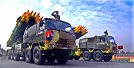
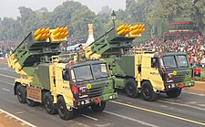
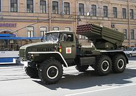
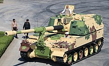
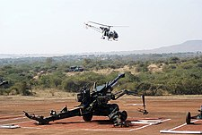
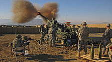
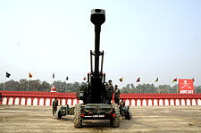
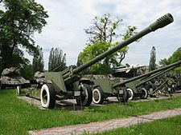
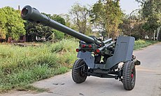
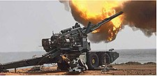

Why is artillery the king of battle?
Because of its devastating role against troop formations during the two world wars,
artillery gained the title, the “King of battle”. During those conflicts,
the majority of casualties were inflicted by shell fire rather than by bullets, bayonets or grenades.
Artillery is a class of heavy military ranged weapons that launch munitions far beyond the range and power of infantry firearms.
Early artillery development focused on the ability to breach defensive walls and fortifications during sieges, and led to heavy,
fairly immobile siege engines.
| Name | image | type | quantity | origin | notes |
|---|---|---|---|---|---|
| Rocket artilary | |||||
| smerch 9k58 mbrl |  | multiple launch rocket system | total 972 launchers | russia,india | 300 mm multiple rocket launch system having a range of max 90 km |
| pinakambrl |  | total 288 launchers | india | Status:In service. (Mk1, 37–45 km range) Status:In service. (Mk2, 60 km range). [121] Being produced at a rate of 5000 missiles per year.[122] 3 more regiments of Pinaka Mark 1 & 6 more regiments of Pinaka Mark 2 on order to be produced by Larsen and Toubro and Tata by 2022. Army all set to have total 22 regiments of pinaka launchers by 2028. | |
| BM21 |  | total 240 launches | india,soviet union | Status:In service (All 240 Units will be replaced by Pinaka Mark 1 MBRL until 2023). BM-21 is a 122 mm multiple rocket launch system. It is upgraded indigenously & its firing range is extended up to 40 km by DRDO .[123] | |
| self propelled artillery | |||||
| k9 vajirat |  | 155mm/52 caliber self-propelled howitzer | 100 | india,south koria | Status:In service. All 100 units were delivered. 2nd batch of additional 200 units are planned to be ordered soon,[125] variant of K9 Thunder.[126] Manufactured by Larsen & Toubro in India. |
| towed artilary | |||||
| dhanus(howtizer) |  | 155mm/45 caliber towed howitzer | 100 | india | Status:In Service. Total 114 guns on order. Order may increase to 414 |
| BAE systems m777 |  | 155mm/39 caliber light towed howitzer | 89 | india,uk | Status:In service. Total 145 ordered. Assembled in India by Mahindra Defense |
| haubits FH77A/B |  | 155mm howitzer | 410 | sweden | Status:In service. All will be replaced by end of 2025 with OFB Dhanush howitzer . 155 mm gun made by Bofors. 410 acquired from 1986 to 1991. To be replaced in near future by the Dhanush (howitzer). |
| M-46 sharang |  | 130mm/155mm field gun | 860+240 upgrated into sharang.total 1100 | soviet union,israel,india | Status:In service. 180 M-46 130 mm howitzer guns were upgraded to 155 mm standard by Soltam in 2008.[134] 300 M-46 guns are to be upgraded by OFB to 155 mm/45 calibre.[134] These upgunned 155 mm M-46 guns developed by the OFB are referred to as "Sharang" guns. |
| OFB indian field gun mk 1/2/3 |  | 105mm field gun | 1700 | india | Status:In service. Being upgraded with digital FCS and INS, to extend the range up to 30 km with bleed base. |
| future procuments or currently under army trials | |||||
| Drdo advanced towed artilary gun system(ATAGS) |  | 155mm/52 caliber towed gun | 7 | india | Undergoing trials, DRDO conducted the first proof firing of armament for the ATAGS on 14 th July, 2016. 40 guns on order production will start soon. In August 2018, Defence Acquisition Council approved the procurement of 150 ATAGS with an estimated cost of ₹3,364.78 crore (US$420 million). |